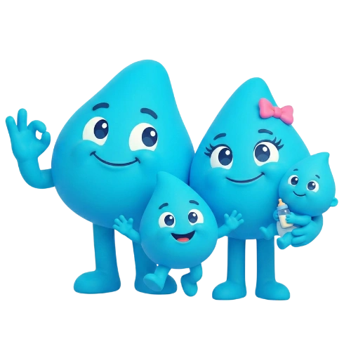
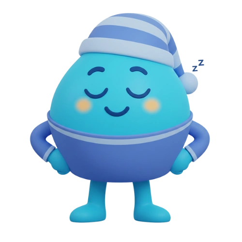

Son Yazılar

Davranışsal Psikoloji
Hafızanızın Boşluklarını Dozi ile Doldurun: Neden Unutuyoruz?
İlaç unutmak bir dalgınlık değil, beynimizin bir oyunudur. Otomatik pilot modunun tuzaklarını ve Dozi'nin akıllı çözümlerini keşfedin.

Aile & Sağlık
Sormadan Bilmenin Huzuru: Aileler İçin Dozi Badi Sistemi
Denetçi değil, evlat olun. "İlacını içtin mi?" sorusunun yarattığı gerilime son verin, Badi sistemi ile uzaktan takip edin.

Alışkanlık Bilimi
Sabah Rutininize İlacı Nasıl Yerleştirirsiniz?
Kahvenizle birlikte gelen sağlık: Alışkanlık zincirleme tekniği ile sabah ilaçlarınızı asla kaçırmayın.

Motivasyon Psikolojisi
Seri Gücü: Küçük Başarıların Büyük Etkisi
7 günlük seri neden 7 ayrı günden daha değerli hissettirir? Kayıp korkusu ve dopamin ödüllerinin gücünü keşfedin.

Akıllı Teknoloji
Eve Gelince Hatırlat: Konum Bazlı İlaç Hatırlatma
Bazen sorun saat değil, nerede olduğunuzdur. Konum bazlı hatırlatma ile doğru yerde doğru zamanda uyarı alın.

Pratik Çözümler
İlaç Bitmeden Haberdar Olun: Stok Takibinin Önemi
Son tabletin panik anı yerine, önceden planlı eczane ziyareti. Stok takibi ile ilacınız bitmeden uyarı alın.